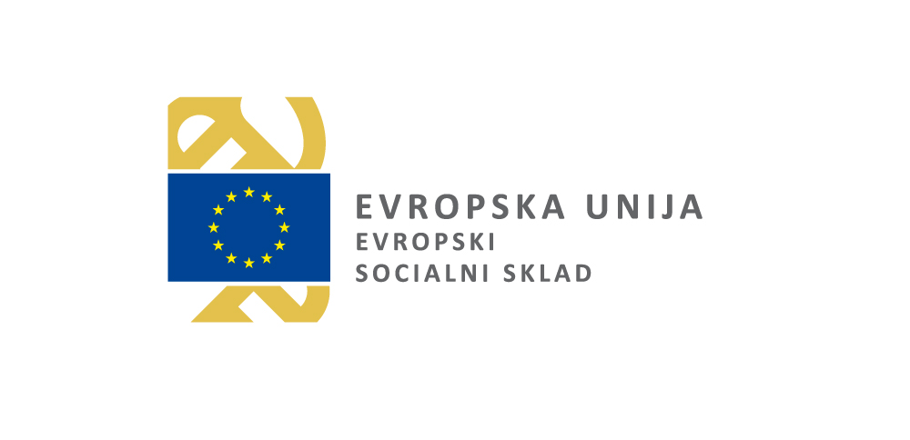
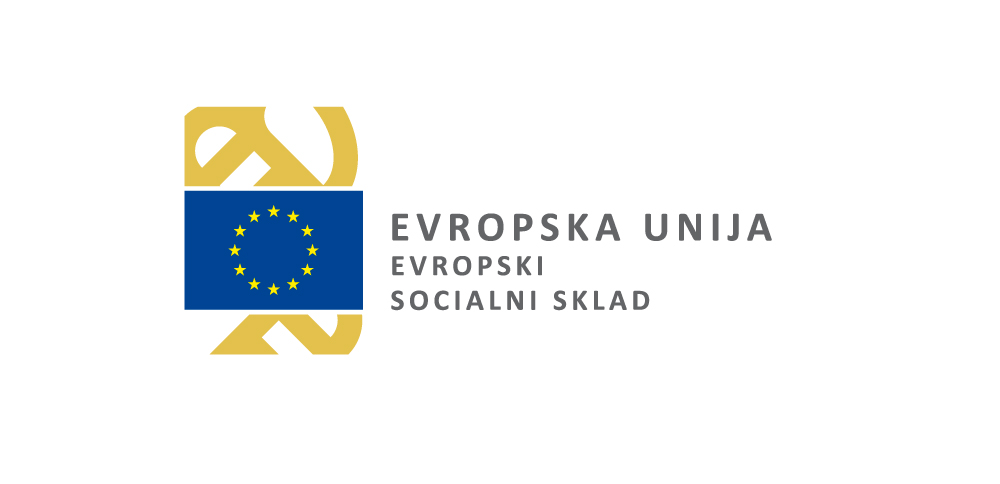
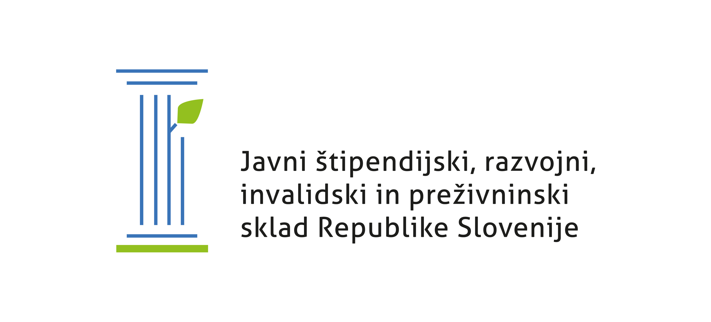
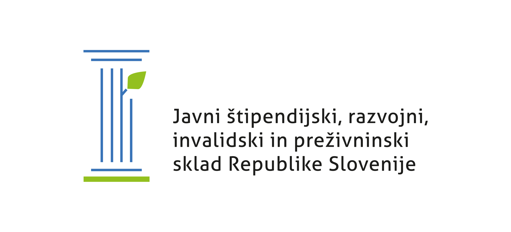
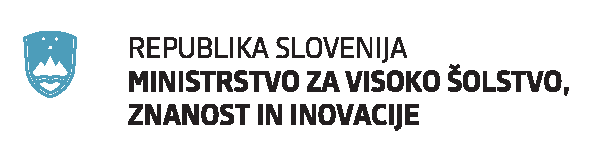
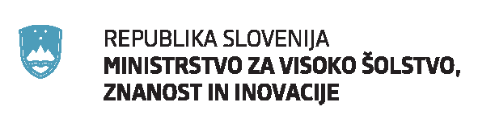

Del Portala Pišek je nastal leta 2018 v okviru SIPK projekta Naloge za poučevanje in učenje računalniškega mišljenja – Portal Pišek (NPUR), ki sta ga sofinancirala Evropski socialni sklad, Ministrstvo za izobraževanje, znanost in šport Republike Slovenije ter Javni štipendijski, razvojni, invalidski in preživninski sklad Republike Slovenije. Projekt sta sofinancirala Republika Slovenija in Evropska unija iz Evropskega socialnega sklada.
 

 

Prenova portala Pišek je deloma potekala v okviru projektov Sistem za samodejno preverjanje programerskih nalogna podlagi javnega razpisa "Projektno delo za pridobitev praktičnih izkušenj in znanj študentov v delovnem okolju 2022/2023" v okviru Operativnega programa za izvajanje Evropske kohezijske politike v obdobju 2014–2020. Projekta sta sofinancirala Republika Slovenija in Evropska unija iz Evropskega socialnega sklada.

 

Da naše Pišče lahko uspešno rešitve išče  , pomaga tudi
, pomaga tudi

Da Pišku ne zmanjka zrnja, pa skrbi tudi ustrezno okolje, ki ga nudi